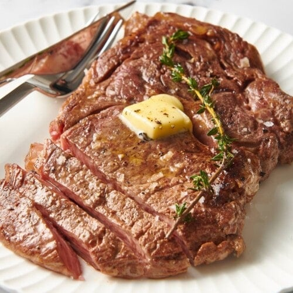
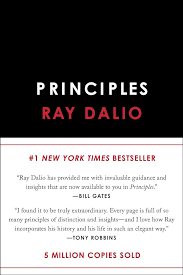
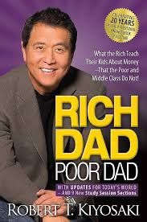
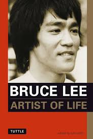
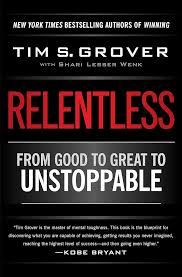

For Spring Break 2024 I took a five day trip to London. I had never been there before and enjoyed exploring a new city. My favorite part of the trip was visiting Wimbledon stadium.
As someone who loves virtually all forms of Italian food, I really enjoyed going to Olive Garden as a kid. My favorite dish was the Fettucini Alfredo, along with however many breadsticks I could manage to get my hands on. Unfortunately, it's been about four years since I last had the chance to go.
 Under normal circumstances, my favorite food is Fettucini Alfredo, but since I've adopted a low-carb way of eating my new #1 has been Ribeye steaks. I like to cook them anywhere between medium and medium-rare. I typically only season with salt and use the broiler to get them done within 15 minutes.
| Principles | Rich Dad, Poor Dad | Artist of Life | Relentless |
|---|---|---|---|
|  |  |  |  |
| Ray Dalio | Robert Kiyosaki | Bruce Lee | Tim Grover |
| Billionaire investor Ray Dalio discusses his personal framework for achieving goals through cultivated principles based in a hyper-realistic worldview. | Robert Kiyosaki employs childhood anecdotes to relay basic financial concepts such as the notion of assets vs. liabilities. | Bruce Lee dives into both his philosophies on combat and life, and how the intersection of these two ultimately formed his novel fighting style, Jeet Kune Do. | Tim Grover, former trainer of NBA stars Michael Jordan, Kobe Bryant, and Dwayne Wade, discusses what separates three categories of competitors: Coolers, Closers, and Cleaners. |